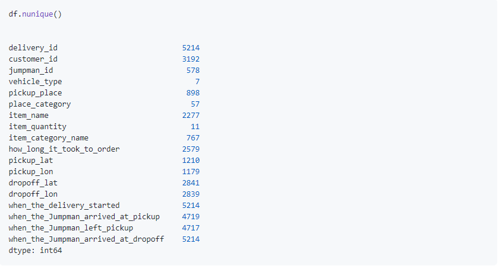
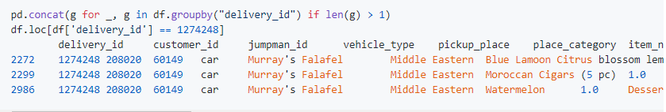
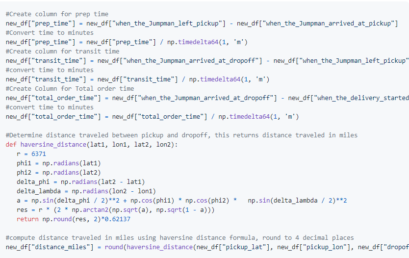

Jumpman23 New Market Analysis
Jumpman23 is an on-demand meal delivery service and has recently opened for business in New York City. We are looking to grow this market by 20% within 2 months. Some of the challenges of doing so involve data integrity issues, delivery delays, and user interface issues. The following analysis provides a breakdown of the data integrity issues and poses solutions to the prinicipal issues surrounding the NYC market.
Data Integriy
The first step to understanding the NYC market lies in uncovering problems with data acquisition and retrieval.

Using Pandas df.info() provides us with some valuable information:
- There is a large number of null values within the item_name, item_quantity, and item_category_name columns. This indicates an issue with data collection
- A number of objects that indicate datetime are stored as objects rather than datetime objects.
- The how_long_it_took_to_order column should be cast as a timedelta object rather than an object.
Next, I used df.nunique() to check for duplicate values that may interfere with the analysis: 
The main takeaway from this view is that the delivery_id column has duplicate values. In order to investigate this further I looked at instances where Delivery ID's were identical:
It looks like different rows are generated for each item on the same delivery id. This could impact order volume analysis and show greater order volume for restaurants that receive multiple item requests per order. In order to ensure the integrity of the following analysis rows with duplicate delivery_id's will be expunged leaving a dataframe with one order per delivery_id.
Finally, we will add some columns to aid in analysis. 
- prep_time: Time between Jumpman arriving at pickup and leaving pickup.
- transit_time: Time it takes for Jumpman to leave pickup and arrive at dropoff.
- total_order_time: Total time to complete order from when the order was completed to when the order was dropped off.